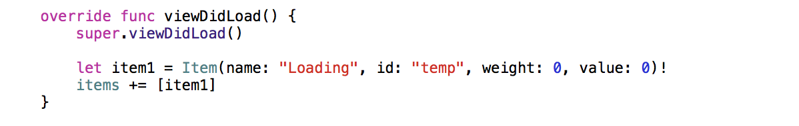

Getting Data and Adding Loading Animation
Now we're ready to add in the code for our first API call, which will retrieve a list of item keys. Go back to the Standard editor and, in the Project navigator, select ItemTableViewController.swift. We need to add a variable here to hold the list of item keys that we get back from the API call. Below the items variable declaration, add the following: var itemKeys = [String]().
In the Project navigator, select ViewController.swift. Below the last function (but still within the class), add the following:
This is the function that actually makes the call to the API to retrieve a list of item keys. It doesn't take any parameters, except for the function to call when the API callback completes. It sets up the HTTP request as a GET that accepts a JSON object, and then defines the callback function that will be automatically called when the request completes. The callback parses the received JSON object as a NSDictionary object for use in the application. If the parsing completes successfully, the list of keys is copied into an array and passed to the completion function, with the success bool set to true. If the parsing fails, the list of keys is set to nil and the success bool is set to false. Outside of the callback definition, the task is resumed, which allows the operation of the application to continue while the API call is processing.
Now that we have the function that will make the call to the API, we need to actually call it. We'll call it in prepareForSegue, which is automatically called when a segue is triggered from this scene (which will be the case when the "View All Items" button is pressed). We'll add prepareForSegue after the previous function:
This function begins with a check to see if the viewAllItemsButton was the sender for the segue. This is currently the only possible sender, however it is a good check to include as it is not uncommon to have multiple possible senders as you develop the app further. Then the function simply calls getToAPI and, in doing so, defines the completion function (this is the function that gets called when complete is called in getToAPI). The completion function checks for success and then sets the itemKeys variable in the destination view (which is in ItemTableViewController.swift) to the received list of item keys.
The following JSON object is an example of the response from this API call:
{"keys": ["ahVzfmFic3RyYWN0LWtleS0xMzUyMjJyEQsSBEl0ZW0YgICAgO2xgwkM", "ahVzfmFic3RyYWN0LWtleS0xMzUyMjJyEQsSBEl0ZW0YgICAgKvzhwkM", "ahVzfmFic3RyYWN0LWtleS0xMzUyMjJyEQsSBEl0ZW0YgICAgLqNiQkM", "ahVzfmFic3RyYWN0LWtleS0xMzUyMjJyEQsSBEl0ZW0YgICAgOvJkQkM", "ahVzfmFic3RyYWN0LWtleS0xMzUyMjJyEQsSBEl0ZW0YgICAgO2tkgkM", "ahVzfmFic3RyYWN0LWtleS0xMzUyMjJyEQsSBEl0ZW0YgICAgOu2gAoM", "ahVzfmFic3RyYWN0LWtleS0xMzUyMjJyEQsSBEl0ZW0YgICAgL7xiwoM", "ahVzfmFic3RyYWN0LWtleS0xMzUyMjJyEQsSBEl0ZW0YgICAgL6WkgoM", "ahVzfmFic3RyYWN0LWtleS0xMzUyMjJyEQsSBEl0ZW0YgICAgPiWlQoM", "ahVzfmFic3RyYWN0LWtleS0xMzUyMjJyEQsSBEl0ZW0YgICAgOuHmQoM", "ahVzfmFic3RyYWN0LWtleS0xMzUyMjJyEQsSBEl0ZW0YgICAgK_hmQoM", "ahVzfmFic3RyYWN0LWtleS0xMzUyMjJyEQsSBEl0ZW0YgICAgL7tmgoM", "ahVzfmFic3RyYWN0LWtleS0xMzUyMjJyEQsSBEl0ZW0YgICAgPjtnQoM"]}
Now, before we make the API calls that will retrieve the details for each item, we need to add the loading animation to our table scene. This will give the user immediate feedback after pressing the "View All Items" button (before the data is all returned from the API calls).
In the Project navigator, select ItemTableViewController.swift. Remove the comments from inside viewDidLoad, and add the following after super.viewDidLoad():
let item1 = Item(name: "Loading", id: "temp", weight: 0, value: 0)!
items += [item1]

This will put a placeholder row in the table while our API calls complete. However, instead of seeing an item named "Loading", it would convey the message much more smoothly to the user to see a loading animation. We want to be able to choose between showing the name, weight, and value labels and showing the loading animation within the same cell. In order to do this, we need to add a pair of views to our prototype cell.
Select Main.storyboard from the Project navigator and then select the cell (mine is called "itemCell") from the Document Outline. Search for "view" in the Object library and drag a View object onto the cell. In the Size inspector, set the Height and Width to 96. Next, click the pin icon and check the boxes for Height and Width (with a value of 96 for both). Set Update Frames to "Items of New Constraints", and then click "Add 2 Constraints".
Now the size of the view is set, we need to set its alignment in the cell. Click on the Align icon and check the boxes in the pop-up window for Horizontally in Container and Vertically in Container (with a value of 0 for each). Once more, set Update Frames to "Items of New Constraints", and then click "Add 2 Constraints". This will center the view in the cell.
In the Identity inspector, select "NVActivityView" for the Class and Module fields. This is the class that we imported during set-up, which contains the loading animations. In the Attributes inspector, type the name of your chosen animation type into the Type Name field (I chose BallScaleRippleMultiple, view the class documentation here to see the animation options), select the color you'd like, and set Hides When Stopped to "On". This last field setting mean that when the animation isn't playing, the view will be hidden, so we won't have to manually show and hide it.
Next, since we want to hide the labels when we show the loading animation, we need to place the labels in their own view. To do this, drag another View object onto the cell. Then, resize it so that it's at least as big as the space the labels take up. Select all three labels in the Document Outline and drag them below the new view so they are now inside that view. This may stack them all on top of one another; respace them so they no longer overlap.
Now we need to add outlets for the new views so we can show and hide them in the view controller. Switch to Assistant editor and select ItemTableView.swift. We need add the following below the import UIKit statement: import NVActivityIndicatorView. Next, below the outlets for the labels, control-click and drag from the square view (that will hold the loading animation) to the code. Name the outlet something suitable (I went with "loadingView"), make sure the Type field is set to "NVActivityIndicatorView", and click connect. To add the second outlet, control-click and drag from the view that contains the labels to just below the outlet we just created. Name the new outlet somethin suitable (I chose "labelView"), and click connect.
As we now have the outlets to access our new views, it's time to add the logic that will switch between the two. Go back to the Standard editor and select ItemTableViewController.swift in the Project navigator. In override func tableView(tableView: UITableView, cellForRowAtIndexPath indexPath: NSIndexPath) -> UITableViewCell, add the following before return cell:
if item.id == "temp" {
cell.labelView.hidden = true
cell.loadingView.startAnimation()
} else {
cell.labelView.hidden = false
cell.loadingView.stopAnimation()
}
This will show the loading animation if the cell's id is "temp", and otherwise it will display the name, weight, and value of the item. You can now run your project and click on the "View All Items" button to see the loading animation.
We're almost done! We just need to add in the second set of API calls to get the item details. Back in ItemTableViewController.swift, we need to add a variable that will keep track of how many items have actually been loaded and a variable that will track the number of items in total to load. Accordingly, add the following lines below the other properties:
var numItemsLoaded = 0
var numItemsTotal = 0
Below the large commented-out section, add the following function:
Below prepareItemList, add the following function:
Finally, we need to actually call prepareItemlist. In the Project navigator, select ViewController.swift. In prepareForSegue, below the line destinationView.itemKeys = listOfKeys! add the following: destinationView.prepareItemList(). And we're done! You can now run the application and when you click "View All Items", you should briefly (depending on your internet connection) see a loading animation and then the list should populate from the top down with items.